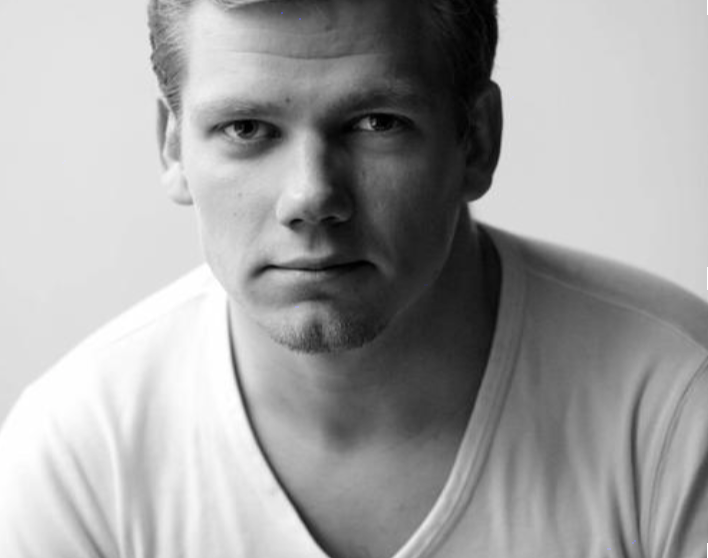

Eigil er 23 år, og studerer multimediedesign på KEA. Han bor i København N med sin kæreste Lis. Han spiller fodbold og tager tit i byen med drengene og drikker masser af øl. Han er på SU, så rådighedsbeløbet er småt - derfor supplerer han det med et studiejob i Bog & Idé.
Han har gået i gymnasiet, og tog derefter et sabbatår, hvor han så småt begyndte at drømme om at blive selvstændig. Undervisning med sammenhængende teori og praksis var derfor han valgte KEA.
Han har en Mac-computer og en iPhone, som han bruger til alt. Han er indfødt bruger af digitale medier, og bevæger sig ubesværet på mange brugerflader. Af sociale medier bruger han mest Facebook, Messenger og Snapchat.
Eigil tager tit i fredagsbaren hvor han hygger sig med alle de andre fra sit studie, og nogle fra de andre semestre. Han ville gerne lære studerende fra de andre afdelinger at kende, men synes ikke han har tid eller mulighed.
Han er god til gruppearbejde, og er stærk i HTML, CSS og Javascript.
Vi testede på en kvinde fra målgruppen, som også er elev her på KEA. Vi filmede selve testen, så vi fik alle hendes overvejelser og inputs med.
Vi rekrutterede Laise fra hold B. Hun sad i Uranus sammen med sin gruppe. Laise er god til at komme med input og bruge et kritisk øje når det kommer til detaljer.
Måden vi udførte testen på var at vi lavede en papirprototype af vores app, med de mest vigtige features på. Denne prototype lagde vi så frem til vores testperson og bad hende finde rundt i vores app efter hendes behov.
Vi filmede hendes test af prototypen, for at kunne se hvad hun trykkede på osv. Dermed optog vi lyd dertil, for at få eventuelle kommentarer og tanker med, da vi også bad testpersonen tænke højt. Alt dette gav et indblik i hvordan en bruger der for første gang ser appen vil anvende den.
Jeg ville nok lave en dobbelt pil…
Til oplysning om at den nedadgående pil skifter til næste uge.
Laise, 0:35
Hvordan jeg kommer tilbage til den forrige uge…Ja det ved jeg ikke.
Denne funktion var ikke en feature…..ups!
Laise, 01:15
Temaer:
Navigationer i app’en -> Gå tilbage, til næste uge osv.
Forbedringer/indsigter:
Forbedre navigation+tekst, så brugeren ikke er i tvivl om hvordan featurerne fungerer. Måske en hjem knap, så brugeren kommer tilbage til den gældende dag.
Jeg synes det er åndsvagt at man skal lede efter den uge man er i [i skemaet, red.].Test af KEA Schedule prototype
Så trykker jeg på….næh huset!??Laise tænke at huset repræsenterede “hjem” funktionen, så dette skal rettes.
Laise, 01:23
Personligt, synes jeg at menuen er irriterendeVi havde lavet en burger-kugle menu hvor det var muligt at bevæge den rundt på skærmen. Det var irriterende for vores testperson.
Laise, 03:32
Det var ikke klart fra starten af at farverne indikerede de forskellige afdelinger på KEA.Laise, 05:27
Temaer:
Menu -> Designet af menuen skal gøres helt klart. Der har været mange forskellige forslag og vi har ikke rigtig kunne bestemme os.
Farvekoder -> Vi skal finde en måde at gøre det klart for brugeren hvad farvekoderne betyder.
Forbedringer/indsigter:
Designet af menuen skal gøres helt klart. Der har været mange forskellige forslag og vi har ikke rigtig kunne bestemme os.
Vi skal finde en måde at gøre det klart for brugeren hvad farvekoderne betyder.
Vi satte os ned i går og fjernede featuren “book et lokale” og “lokation”.
Efter interviewet med Laise fik vi en stor indsigt i hvilke features der fungerede og hvilke der evt. skulle fjernes. Vi har lavet et redesign af vores menu efter en del inspiration søgen på nettet.
Jeg kender kun multimediedesignere på KEA. Jeg er god til at netværke på den gammeldags facon, face to face, men ikke så meget digitalt. Det ville være rart, hvis der var et forum hvor jeg kunne mingle med folk.
Hvad er det her?Det var en account setting. Det blev foreslået at det skulle laves om til fx. et tandhjul.
Laise, 01:35
Har account samme udseende for tutor og studerende?Nej det har de ikke, dette skal gøre mere klart. Eleverne skal ikke udfylde noget da uni login sørger for at deres oplysninger står der i forvejen.
Laise, 02:26
Hvad er det her for noget?Det var et point system, efter hvor brugbart svaret havde været. Inspiration fra StackoverFlow.
Laise, 03:25
Temaer:
Ikon redesign -> account settings
App design -> overvej redesign af featuren “questions?”. Gør udseendet for tutor account og student account forskellige.
Forbedringer/indsigter:
Overvej redesign af featuren “questions?”.
Gør udseendet for tutor account og student account forskellige.
Ikonet account settings skal redesignes.
Jeg kunne godt bruge hjælp til kodning en gang imellem. Især op til eksamen.Test af KEA Tutor prototype
Log in
Din profil.
Chat
Feed